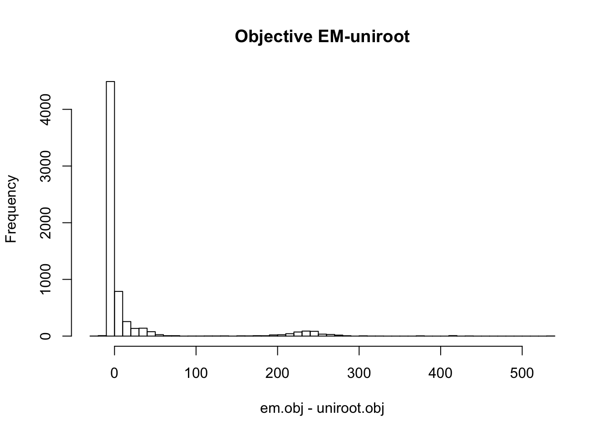
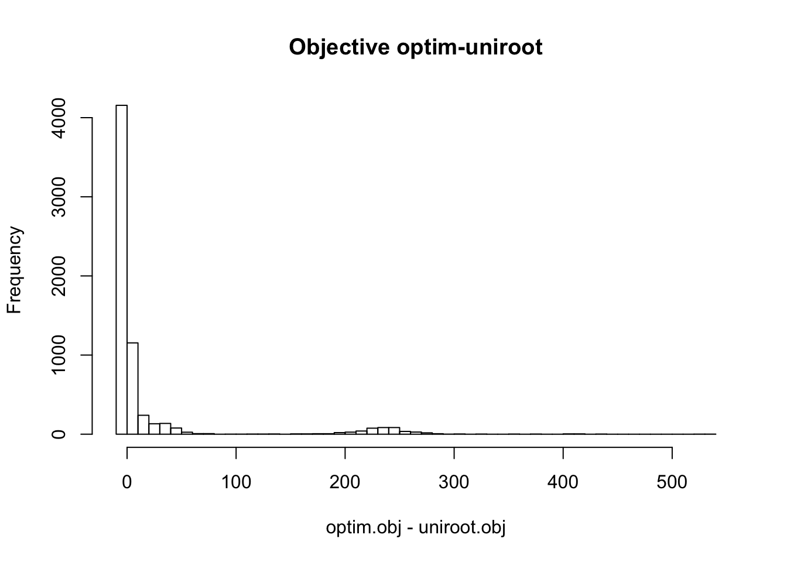
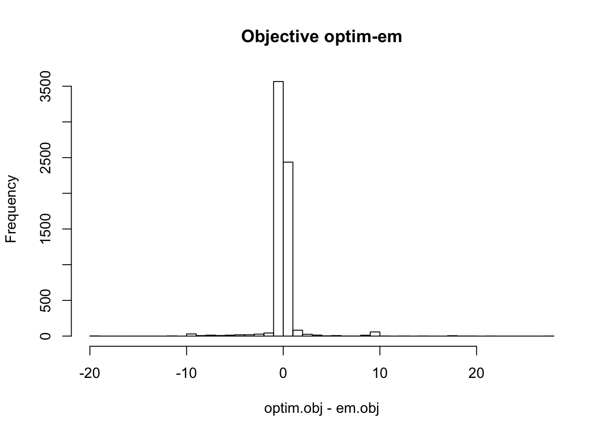
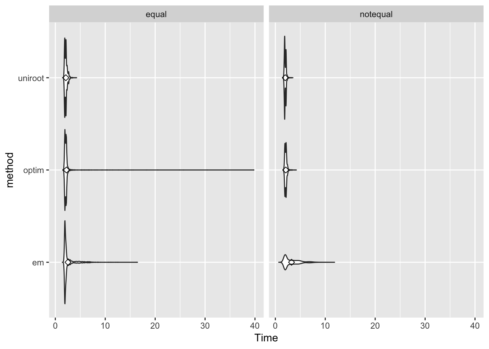

Last updated: 2019-02-18
workflowr checks: (Click a bullet for more information) ✔ R Markdown file: up-to-date
Great! Since the R Markdown file has been committed to the Git repository, you know the exact version of the code that produced these results.
✔ Environment: empty
Great job! The global environment was empty. Objects defined in the global environment can affect the analysis in your R Markdown file in unknown ways. For reproduciblity it’s best to always run the code in an empty environment.
✔ Seed:
set.seed(20190115)
The command set.seed(20190115) was run prior to running the code in the R Markdown file. Setting a seed ensures that any results that rely on randomness, e.g. subsampling or permutations, are reproducible.
✔ Session information: recorded
Great job! Recording the operating system, R version, and package versions is critical for reproducibility.
✔ Repository version: 29c8f74
wflow_publish or wflow_git_commit). workflowr only checks the R Markdown file, but you know if there are other scripts or data files that it depends on. Below is the status of the Git repository when the results were generated:
Ignored files:
Ignored: .DS_Store
Ignored: .Rhistory
Ignored: .Rproj.user/
Ignored: .sos/
Ignored: data/.DS_Store
Ignored: output/.DS_Store
Untracked files:
Untracked: docs/figure/test.Rmd/
Untracked: output/dscoutProblem475.rds
Untracked: output/dscoutProblem75.rds
Untracked: output/random_data_76.rds
Untracked: output/random_data_76_sim_gaussian_8.rds
Untracked: output/random_data_76_sim_gaussian_8_get_sumstats_1.rds
Unstaged changes:
Modified: output/dsc_susie_z_v_output.rds
library(dscrutils)
dscout = dscquery('susie_z_v', target='score_susie sim_gaussian.pve sim_gaussian.n_signal sim_gaussian.effect_weight susie_z_uniroot.L susie_z_em.L susie_z_optim.L susie_z_uniroot.optimV_method susie_z_em.optimV_method susie_z_optim.optimV_method score_susie.objective score_susie.converged score_susie.total score_susie.valid susie_z_uniroot.DSC_TIME susie_z_em.DSC_TIME susie_z_optim.DSC_TIME')
colnames(dscout) = c('DSC', 'output.file', 'objective', 'converged', 'total', 'valid', 'pve', 'n_signal', 'effect_weight', 'L_uniroot', 'method_uniroot','Time_uniroot', 'L_em', 'method_em', 'Time_em', 'L_optim', 'method_optim', 'Time_optim')
dscout$effect_weight[which(dscout$effect_weight == 'rep(1/n_signal, n_signal)')] = 'equal'
dscout$effect_weight[which(dscout$effect_weight != 'equal')] = 'notequal'
method = dscout$method_uniroot
method[dscout$method_em == 'EM'] = 'em'
method[dscout$method_optim == 'optim'] = 'optim'
L = dscout$L_uniroot
L[!is.na(dscout$L_em)] = dscout$L_em[!is.na(dscout$L_em)]
L[!is.na(dscout$L_optim)] = dscout$L_optim[!is.na(dscout$L_optim)]
Time = dscout$Time_uniroot
Time[!is.na(dscout$Time_em)] = dscout$Time_em[!is.na(dscout$Time_em)]
Time[!is.na(dscout$Time_optim)] = dscout$Time_optim[!is.na(dscout$Time_optim)]
dscout = cbind(dscout, method, L, Time)
dscout = dscout[, -c(10:18)]library(dplyr)
Attaching package: 'dplyr'The following objects are masked from 'package:stats':
filter, lagThe following objects are masked from 'package:base':
intersect, setdiff, setequal, unionlibrary(knitr)
library(kableExtra)
library(susieR)
dscout = readRDS('output/dsc_susie_z_v_output.rds')We randomly generate X from N(0,1), n = 1200, p = 1000.
We randomly generate the response based on different number of signals (1, 3, 5, 10), pve (0.01, 0.2, 0.6, 0.8), whether the signals have the same effect size. We fit SuSiE model with L = 5 and 10.
We perform simulations to compare three methods uniroot, em and optim. There are 100 replicates in the simulation. Therefore 19200 models in total.
All SuSiE models converge.
sum(dscout$converged)[1] 19200uniroot.obj = dscout$objective[dscout$method == 'uniroot']
em.obj = dscout$objective[dscout$method == 'em']
optim.obj = dscout$objective[dscout$method == 'optim']hist(em.obj - uniroot.obj, main='Objective EM-uniroot', breaks=50)
| Version | Author | Date |
|---|---|---|
| 3120d0d | zouyuxin | 2019-02-17 |
hist(optim.obj - uniroot.obj, main='Objective optim-uniroot', breaks=50)
| Version | Author | Date |
|---|---|---|
| 3120d0d | zouyuxin | 2019-02-17 |
hist(optim.obj - em.obj, main='Objective optim-em', breaks=50)
| Version | Author | Date |
|---|---|---|
| 3120d0d | zouyuxin | 2019-02-17 |
Therefore, the objectives from the three different methods are similar in most cases. EM and optim obtain much higher objective than uniroot in some cases. In some cases, the difference between objectives from uniroot and optim (or em) is more than 200.
em_uni = optim_uni = optim_em = matrix(NA,1,2)
weight = unique(dscout$effect_weight)
for(j in 1:2){
tmp = dscout %>% filter(effect_weight == weight[j])
uniroot.obj = tmp$objective[tmp$method == 'uniroot']
em.obj = tmp$objective[tmp$method == 'em']
optim.obj = tmp$objective[tmp$method == 'optim']
em_uni[1,j] = sum(em.obj > uniroot.obj)/3200
optim_uni[1,j] = sum(optim.obj > uniroot.obj)/3200
optim_em[1,j] = sum(optim.obj > em.obj)/3200
}
colnames(em_uni) = colnames(optim_uni) = colnames(optim_em) = paste0('equal_', c('T', 'F'))Despite the different pves and number of effects in the simulations, the performance of different methods are different only related to whether the effect sizes are equal.
The proportion of time the objective of em is higher than uniroot:
em_uni %>% kable() %>% kable_styling()| equal_T | equal_F |
|---|---|
| 0.37625 | 0.483125 |
The proportion of time the objective of optim is higher than uniroot:
optim_uni %>% kable() %>% kable_styling()| equal_T | equal_F |
|---|---|
| 0.564375 | 0.7584375 |
The proportion of time the objective of optim is higher than em:
optim_em %>% kable() %>% kable_styling()| equal_T | equal_F |
|---|---|
| 0.6896875 | 0.7371875 |
library(ggplot2)
p <- ggplot(dscout, aes(x=method, y=Time)) + facet_wrap(~effect_weight)+ geom_violin(trim = FALSE) + coord_flip() + stat_summary(fun.y=mean, geom="point", shape=23, size=2)
p
| Version | Author | Date |
|---|---|---|
| 3120d0d | zouyuxin | 2019-02-17 |
We measure the seconds the model converges under different methods. EM and optim use longer time than uniroot (probably more iterations). This result is not very reliable because I submitted the DSC jobs on RCC. The running time depends on the task node.
The simulated data has pve 0.8, the number of signals is 3.
data76.X = readRDS('output/random_data_76.rds')
data76.y = readRDS('output/random_data_76_sim_gaussian_8.rds')
data76.sum = readRDS('output/random_data_76_sim_gaussian_8_get_sumstats_1.rds')
R = cor(data76.X$X)
time.optim = system.time(m_optim <- susieR::susie_z(data76.sum$sumstats$bhat/data76.sum$sumstats$shat, R = R, L=5, optimV_method = 'optim', max_iter = 1000))['elapsed']
time.em = system.time(m_em <- susieR::susie_z(data76.sum$sumstats$bhat/data76.sum$sumstats$shat, R = cor(data76.X$X), L=5, optimV_method = 'EM', max_iter = 1000))['elapsed']
time.uniroot = system.time(m_uniroot <- susieR::susie_z(data76.sum$sumstats$bhat/data76.sum$sumstats$shat, R = cor(data76.X$X), L=5, optimV_method = 'uniroot', max_iter = 1000))['elapsed']Time = c(time.uniroot, time.em, time.optim)
niter = c(m_uniroot$niter, m_em$niter, m_optim$niter)
objective = c(susie_get_objective(m_uniroot), susie_get_objective(m_em), susie_get_objective(m_optim))
res = rbind(Time, niter, objective)
colnames(res) = c('uniroot', 'EM', 'optim')
res %>% kable() %>% kable_styling()| uniroot | EM | optim | |
|---|---|---|---|
| Time | 4.0470 | 14.6890 | 47.7650 |
| niter | 4.0000 | 36.0000 | 134.0000 |
| objective | -969.8119 | -531.9529 | -531.9529 |
The objectives from em and optim are similar, and it’s much higher than the one from uniroot. The optim method uses more than 100 iterations to converge.
sessionInfo()R version 3.5.1 (2018-07-02)
Platform: x86_64-apple-darwin15.6.0 (64-bit)
Running under: macOS 10.14.3
Matrix products: default
BLAS: /Library/Frameworks/R.framework/Versions/3.5/Resources/lib/libRblas.0.dylib
LAPACK: /Library/Frameworks/R.framework/Versions/3.5/Resources/lib/libRlapack.dylib
locale:
[1] en_US.UTF-8/en_US.UTF-8/en_US.UTF-8/C/en_US.UTF-8/en_US.UTF-8
attached base packages:
[1] stats graphics grDevices utils datasets methods base
other attached packages:
[1] ggplot2_3.1.0 bindrcpp_0.2.2 susieR_0.6.4.0438 kableExtra_1.0.1
[5] knitr_1.20 dplyr_0.7.8
loaded via a namespace (and not attached):
[1] Rcpp_1.0.0 plyr_1.8.4 highr_0.7
[4] compiler_3.5.1 pillar_1.3.1 git2r_0.24.0
[7] workflowr_1.1.1 bindr_0.1.1 R.methodsS3_1.7.1
[10] R.utils_2.7.0 tools_3.5.1 digest_0.6.18
[13] gtable_0.2.0 lattice_0.20-38 evaluate_0.12
[16] tibble_2.0.1 viridisLite_0.3.0 pkgconfig_2.0.2
[19] rlang_0.3.1 Matrix_1.2-15 rstudioapi_0.9.0
[22] yaml_2.2.0 withr_2.1.2 stringr_1.3.1
[25] httr_1.4.0 xml2_1.2.0 hms_0.4.2
[28] grid_3.5.1 webshot_0.5.1 rprojroot_1.3-2
[31] tidyselect_0.2.5 glue_1.3.0 R6_2.3.0
[34] rmarkdown_1.11 purrr_0.2.5 readr_1.3.1
[37] magrittr_1.5 whisker_0.3-2 backports_1.1.3
[40] scales_1.0.0 htmltools_0.3.6 assertthat_0.2.0
[43] rvest_0.3.2 colorspace_1.4-0 labeling_0.3
[46] stringi_1.2.4 lazyeval_0.2.1 munsell_0.5.0
[49] crayon_1.3.4 R.oo_1.22.0 This reproducible R Markdown analysis was created with workflowr 1.1.1